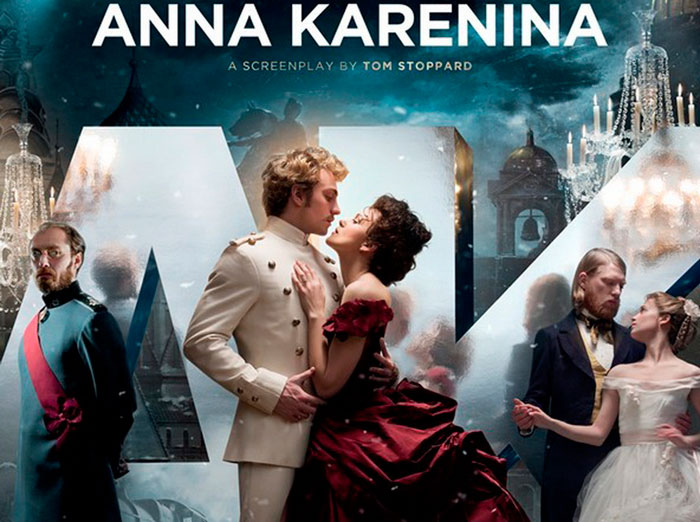

Anna Karenina
by Leo Tolstoy

Anna Karenina is a novel by the Russian writer Leo Tolstoy, published in serial installments from 1873 to 1877 in the periodical The Russian Messenger. Tolstoy clashed with editor Mikhail Katkov over political issues that arose in the final installment (Tolstoy's negative views of Russian volunteers going to fight in Serbia); therefore, the novel's first complete appearance was in book form in 1878.
Widely regarded as a pinnacle in realist fiction, Tolstoy considered Anna Karenina his first true novel, when he came to consider War and Peace to be more than a novel.
Fyodor Dostoyevsky declared it "flawless as a work of art." His opinion was shared by Vladimir Nabokov, who especially admired "the flawless magic of Tolstoy's style," and by William Faulkner, who described the novel as, "the best ever written." The novel continues to enjoy popularity, as demonstrated by a recent poll of 125 contemporary authors by J. Peder Zane, published in 2007 in "The Top Ten" in Time, which declared that Anna Karenina is the "greatest novel ever written."